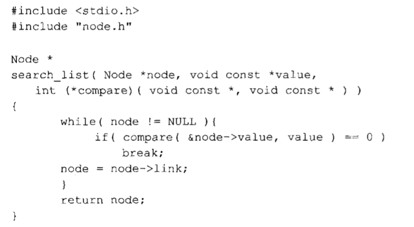
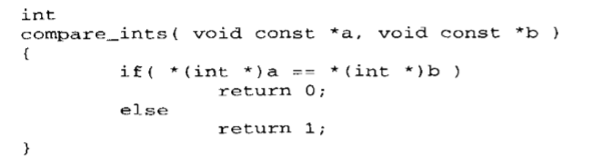

在网上看了许多关于回调函数的解释，感觉没能get到主要的一个点，就自己写一下对回调函数的理解及回调函数的应用场景和作用吧
1、官方定义
回调函数就是一个通过函数指针调用的函数。如果你把函数的指针（地址）作为参数传递给另一个函数，当这个指针被用来调用其所指向的函数时，我们就说这是回调函数。回调函数不是由该函数的实现方直接调用，而是在特定的事件或条件发生时由另外的一方调用的，用于对该事件或条件进行响应。
2、函数指针
理解回调函数前必须知道什么是函数指针
函数指针也是一种指针，只是它指向的不是整型，字符型而是函数。在C中，每个函数在编译后都是存储在内存中，并且每个函数都有一个入口地址，根据这个地址，我们便可以访问并使用这个函数。函数指针就是通过指向这个函数的入口，从而调用这个函数。
int fun();
int (*p)();
fun是一个返回值为整型的函数
p是一个指针，指针指向一个函数，函数的返回值是整型
p = fun; 函数fun把地址赋给函数指针p
下次调用fun()可以直接用 (*p)( ) 或者 p( )
为什么可以直接用p(),因为函数名本质也是一个地址，函数指针本质也是一个地址，把地址fun赋给地址p ，p不就等于fun了吗，（*p）和p相当于间接访问和直接访问的关系，不用纠结过多
3、回调函数
回调函数就是你写一个函数，把函数地址赋值一个函数指针，然后把这个函数指针当作参数赋给另一个函数，另一个函数通过函数指针的地址调用这个函数，就是回调函数，他有什么作用呢，举个例子
比如，我们写A B C D 四个函数，封装成一个库文件，然后我们的主函数里面要写一个功能函数，这个功能要用到函数A，假如不用函数指针，这个功能函数就要调用函数A，下次如果用到函数B，那么我们得删掉A，调用函数B，每次都要修改这个函数很麻烦，但如果使用回调函数就不一样了，我们可以定义4个函数指针，把4个函数的地址分别赋给4个函数指针，然后将函数指针当作参数传递给功能函数，功能函数就可以通过修改参数来调用对应的函数，而它本身不用做任何的修改。这样的话，功能函数就可以根据不同的情况，通过函数指针去调用不同的函数，代码如下
#include <stdio.h>
#include <stdlib.h>
float ADD(float a, float b)
{
return a + b;
}
float SUB(float a, float b)
{
return a - b;
}
float MUL(float a, float b)
{
return a * b;
}
float DIV(float a, float b)
{
return a / b;
}
float (*A)(float x, float y) = ADD;
float (*B)(float x, float y) = SUB;
float (*C)(float x, float y) = MUL;
float (*D)(float x, float y) = DIV;
float fun(float x, float y, float(*p)(float x, float y)) {
return p(x, y);
}
int main()
{
printf("%f", fun(2, 3, A));
}
再举一个例子，我们要实现一个函数，函数的功能是查找链表里面的某一个值，那么函数设计两个参数，一个是链表第一个结点的指针，还有一个要查找的数，这时候问题就来了，链表的值可能是整型，也可能是字符，不同的类型对应的参数类型也不同，比较的方式也不同，这时候就需要用到回调函数，可以写一个比较两个值的函数，然后把函数地址赋值给一个函数指针，函数指针当作参数放到功能函数里作为第三个参数，功能函数就可以通过函数指针调用比较函数，并把两个值传给回调函数，比较函数获取到两个值后，通过强制类型转换比较两个值，返回结果。代码如图


希望可以通过这两个例子帮助大家理解回调函数的使用，回调函数本质上就是函数指针的原理
转载请注明出处、作者，谢谢